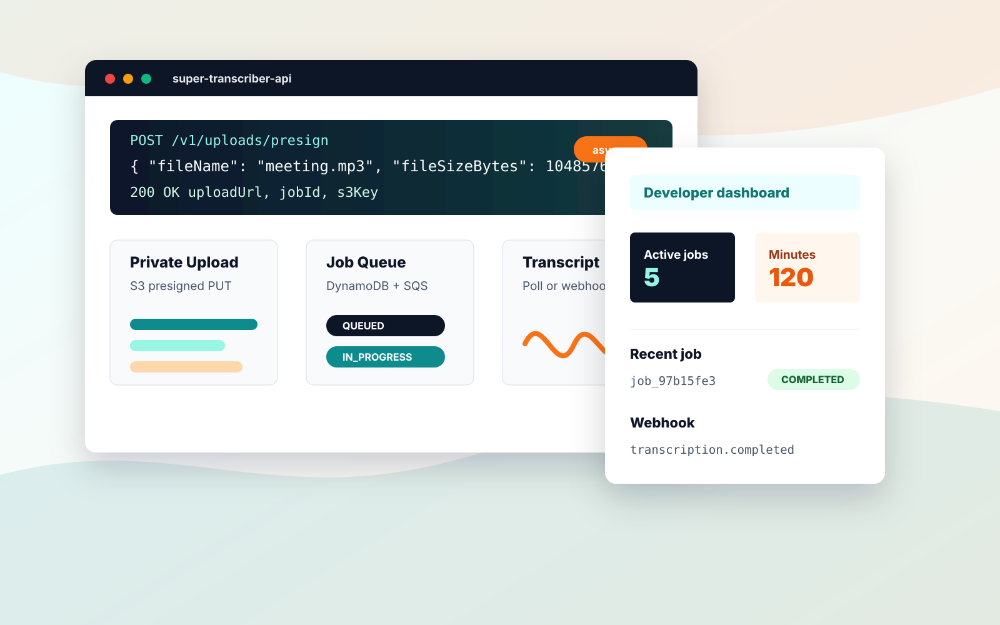

Presign upload
Request a private S3 upload URL for an MP3 or M4A file up to 200 MB.
POST /v1/uploads/presign

Built from the original Super Transcriber workflow
A privacy-conscious transcription API for teams that need async audio jobs, private AWS deployment, usage controls, and a clean REST interface their product can call today.
From app to platform
Super Transcriber started as an end-user-facing web app for uploading audio and receiving transcripts. This API-first edition turns that workflow into a ready-to-integrate backend for developers, internal platforms, and companies that want transcription inside their own existing systems without building the AWS pipeline from scratch.
API workflow
The hosted API keeps integration simple, while the enterprise path deploys the same Terraform stack into a customer-owned AWS account.
Request a private S3 upload URL for an MP3 or M4A file up to 200 MB.
POST /v1/uploads/presign
Submit the returned S3 key and optional speaker or duration metadata.
POST /v1/transcriptions
Poll by job id, list recent jobs with cursor pagination, or receive a webhook.
GET /v1/transcriptions/{jobId}
Read complete transcript text and optional raw JSON without exposing another user's data.
COMPLETED
Developer experience
Every endpoint uses structured JSON, API-key authentication, durable async jobs, and clear error bodies. Customers can start on the hosted API and move to private AWS deployment when procurement or data controls require it.
curl -sS -X POST "$API_BASE_URL/v1/transcriptions" \
-H "x-api-key: $SUPER_TRANSCRIBER_API_KEY" \
-H "content-type: application/json" \
-d '{
"s3Key": "customers/cust_123/uploads/job_123/meeting.mp3",
"fileName": "meeting.mp3",
"durationSeconds": 600,
"speakerCount": 2
}'import { SuperTranscriberClient } from "@super-transcriber/api-client";
const client = new SuperTranscriberClient({
baseUrl: process.env.SUPER_TRANSCRIBER_API_URL!,
apiKey: process.env.SUPER_TRANSCRIBER_API_KEY!
});
const job = await client.createTranscription({
s3Key: presign.s3Key,
fileName: "meeting.mp3",
durationSeconds: 600,
speakerCount: 2
});{
"event": "transcription.completed",
"jobId": "job_97b15fe3",
"status": "COMPLETED",
"customerId": "cust_123",
"transcriptText": "Welcome everyone..."
}AWS-native platform
API Gateway HTTP API, Lambda Node.js 20 on arm64, SQS workers, EventBridge completion events, and DynamoDB on-demand storage.
Audio enters through presigned S3 uploads. Buckets block public access and lifecycle rules expire files and generated transcripts.
Per-customer active job and monthly minute limits are enforced before transcription starts. Stripe is optional and disabled until configured.
Hashed API keys, scoped job ownership checks, per-Lambda IAM roles, HMAC webhooks, structured errors, and no raw API-key logging.
The same Terraform stack can be deployed into a customer AWS account for teams that need direct infrastructure ownership.
No VPC, NAT Gateway, RDS, OpenSearch, or fixed monthly compute. Idle cost stays tied to minimal secrets and storage.
Packaging
Plans are represented as API usage limits and can be wired to Stripe Checkout, private contracts, or customer-owned deployments.
For prototypes, internal tools, and first integrations.
For products adding transcription to customer workflows.
For companies that want the same system in their account.
Ready-to-integrate backend